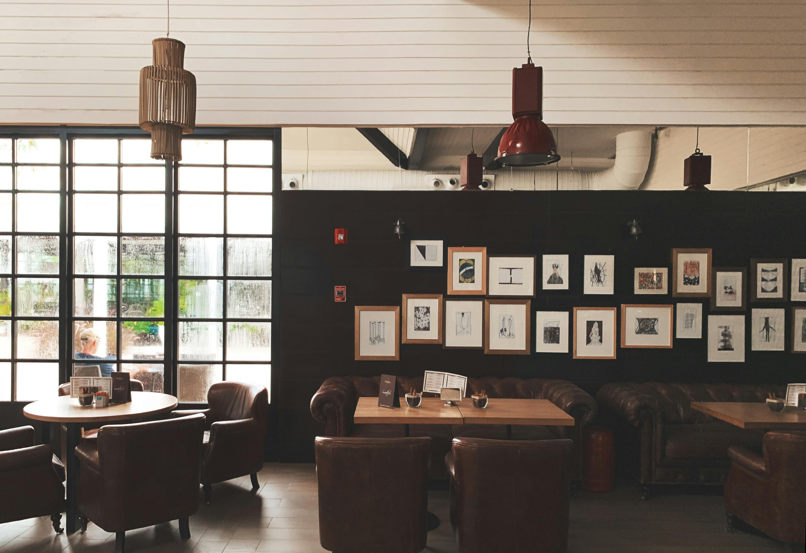
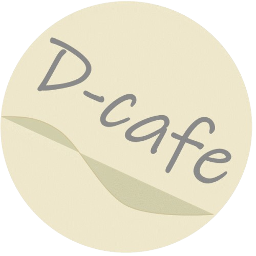
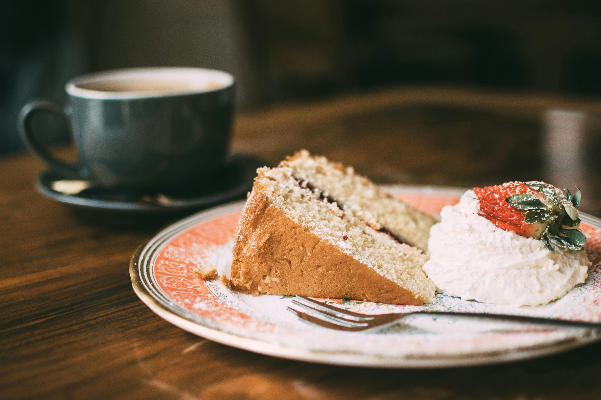

Original
ーオリジナルー
いちばん優しくていちばん素材の味がする、
そんなドーナッツです。コーヒーのほろ苦さで
さらに素材の甘みが引き立ちます。
D-cafe
ディーカフェ

D-cafeは優しい甘みのドーナツを味わいながら
ほっとリラックスできる場所
皆様に愛され続けてきたD-cafeのドーナッツ。
D-cafeは今も昔も皆様に"おいしい"をお届けするため手間を惜しまず
スタッフ一人一人が作り上げています。
どんな時もドーナッツでハッピーをお届けする、そんな想い出で焼き上げられています。
Access

Open: 9:00 ~ 19:00
Address: 〒450-0002
愛知県名古屋市中村区名駅3丁目26-8
KDX名古屋駅前ビル 10F

A-cafe
450-0000
愛知県名古屋市中村区名駅3-26-8 AKG名古屋駅前ビル 10F
TEL 0120-444-4444
営業時間 / 9:00 ~ 20:00

自家焙煎のコーヒーを中心に提供する落ち着いたカフェ。豆の選定から抽出まで一杯ずつ丁寧に行い、店内は静かで読書や作業、打ち合わせにも使いやすい空間。電源やWi-Fiも整い、長時間でも安心して利用できます。
B-cafe
450-0001
愛知県名古屋市中村区名駅4-12-8 BKB名古屋駅前ビル 11F
TEL 021-222-222
営業時間 / 9:00 ~ 20:00

焼きたてパンとコーヒーを気軽に楽しめる街中のカフェ。朝から夕方まで営業しており、通勤途中の立ち寄りや待ち合わせ、休憩にも便利。明るく入りやすい雰囲気で日常使いしやすいお店です。
C-cafe
450-0002
愛知県名古屋市中村区名駅1-13-8 BLT名古屋駅前ビル 1F
TEl 021-333-3333
営業時間 / 9:00 ~ 20:00

季節の食材を使ったスイーツと紅茶が揃うカフェ。店内は自然光が入りやすく、天気の良い日は窓辺でゆったり過ごせます。落ち着いた時間を楽しみたい人に向いた空間です。